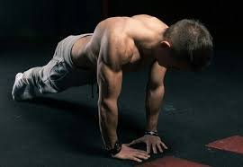
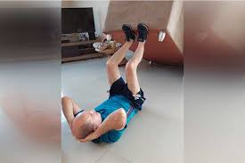

Gostaria De Aprender como começar a musculação em casa, existe Diversos benefícios sobre a musculação
Musculação: como começar e os principais benefícios
A musculação pode trazer diversos benefícios para a saúde como melhorar o condicionamento físico, promover maior resistência muscular, acelerar o metabolismo, diminuir a gordura acumulada no corpo, melhorar a postura corporal e a capacidade cardiorrespiratória. Os exercícios de musculação podem ser feitos usando equipamentos, como barras, polias e halteres
pesar da musculação ser frequentemente associada a benefícios estéticos, como perda de peso e ganho de massa muscular, esse tipo de atividade também é capaz de promover a sensação de bem-estar, podendo ser considerado um aliado no tratamento do estresse, ansiedade e depressão,

Para que seja possível alcançar o máximo de benefícios, é importante que antes de iniciar a prática da musculação, seja realizado uma avaliação física e de saúde, além de ser também indicado que os primeiros treinos sejam feitos sob orientação de um profissional de educação física, para garantir que os movimentos estão sendo realizados corretamente e seja possível prevenir lesões.

Benefícios da musculação
Os principais benefícios da musculação da saúde são:
1. Melhora a postura corporal
A prática de musculação fortalece a musculatura que sustenta a coluna, melhorando a postura e diminuindo as dores nas costas por exemplo.
2. Diminui a quantidade de gordura
Quando a musculação é praticada de forma regular, intensa e acompanhada de uma alimentação saudável, o corpo passa a queimar mais gordura e aumentar a massa muscular, acelerando o metabolismo e favorecendo o gasto calórico mesmo quando se está parado.
A perda de gordura, além de promover benefícios estéticos e aumentar a auto-estima, previne uma série de doenças, como obesidade e aterosclerose, por exemplo.
3. Tonifica os músculos
A tonificação dos músculos é uma das visíveis da prática da musculação. A tonificação acontece devido à perda de gordura, aumento da massa muscular e fortalecimento da musculatura o que além de representar ganho de força, permite que haja o desaparecimento das celulites, por exemplo.
No entanto, para que os músculos fiquem mais durinhos, é preciso ter uma hidratação correta e alimentação balanceada. Veja o que comer para ganhar massa muscular.
4. Combate problemas emocionais
Por promover a liberação da endorfina, que é o hormônio responsável pela sensação de bem-estar, a musculação pode ser uma ótima alternativa para aliviar o estresse, diminuir os sintomas de ansiedade e, até mesmo, combater a depressão.
5. Aumenta a densidade óssea
A musculação aumenta a densidade óssea, ou seja, torna os ossos mais resistentes, diminuindo as chances de fraturas e desenvolvimento da osteoporose, que é comum em pessoas mais idosas e mulheres na menopausa. No entanto, para que os ossos fiquem realmente fortalecidos, é preciso que a musculação seja acompanhada de uma alimentação saudável, equilibrada e composta por alimentos ricos em cálcio e vitamina D. Veja quais são os alimentos ricos em vitamina D.
6. Diminui o risco de diabetes
O risco de diabetes pode ser diminuído com a prática da musculação porque o organismo passa utilizar a glicose circulante como fonte de energia e o açúcar que se encontra em excesso no sangue passa a ser armazenado na forma de glicogênio, que é utilizado em outros processos metabólicos, por exemplo.
7. Melhora o condicionamento cardiorrespiratório
Como começar
Para começar a praticar musculação e garantir os benefícios, algumas recomendações são beber bastante agua tem que ficar hidratado e dormir no minimo 8:00 por dia
Gostaria de saber mais sobre como ganhar musculação
Pegue Agora um ebook que vai te ensinar tudo que vc precisar para treinar em casa
com um desconto de 60%.
Eu quero Malhar em casa Agora